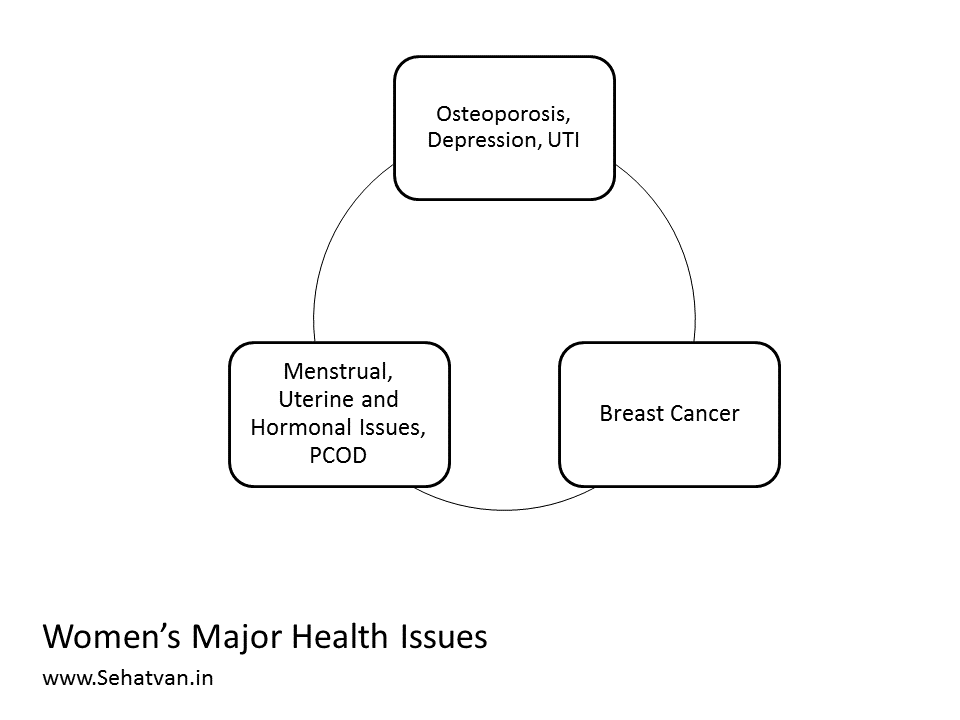
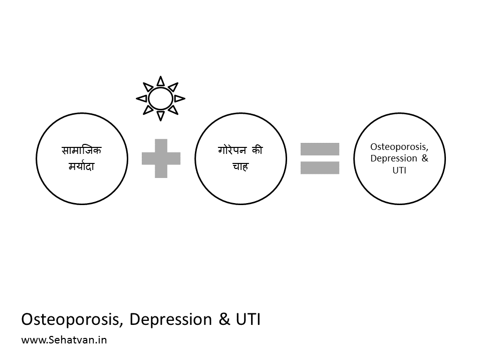
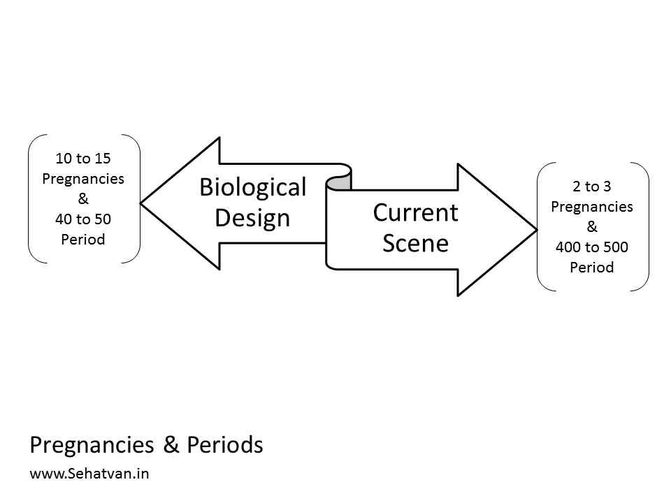
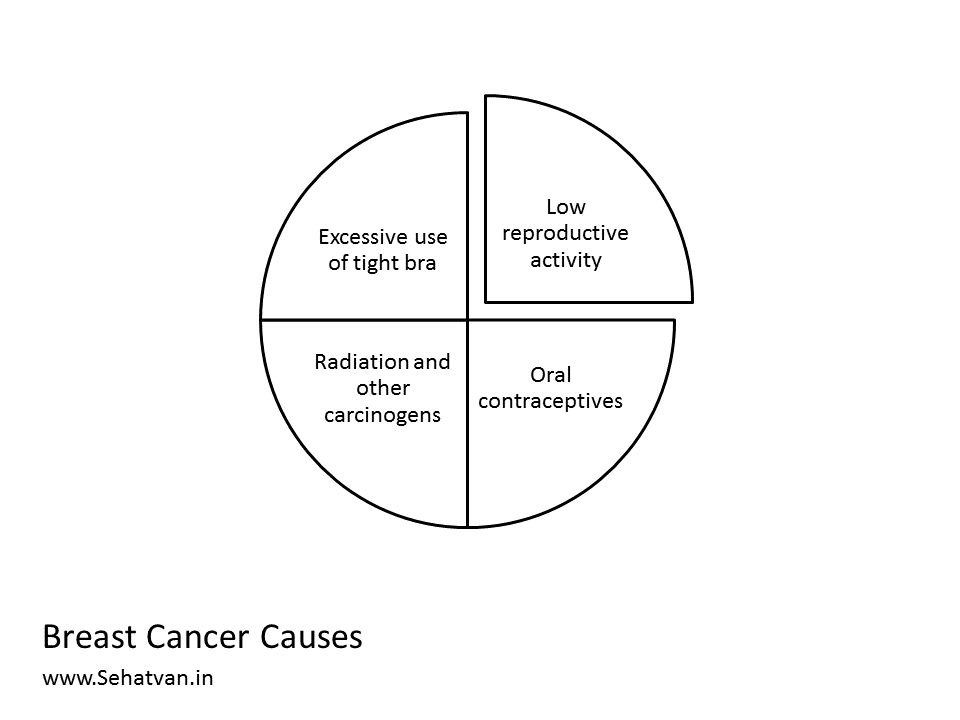
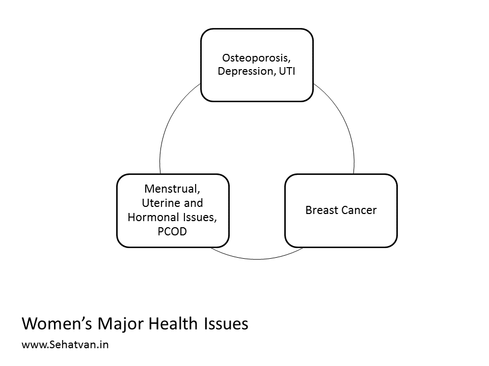
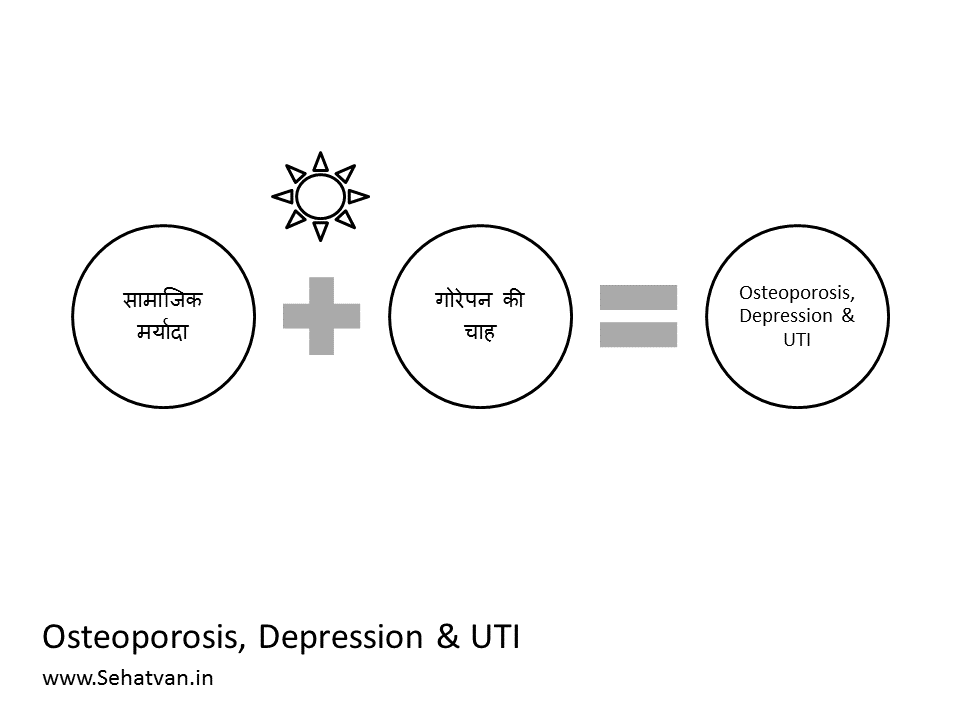
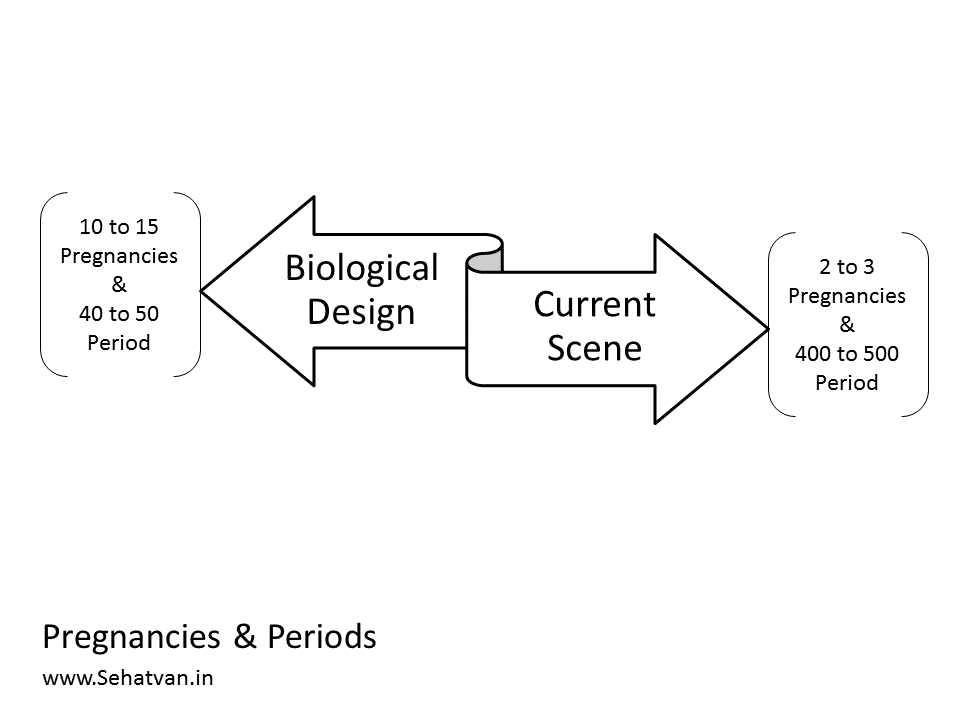
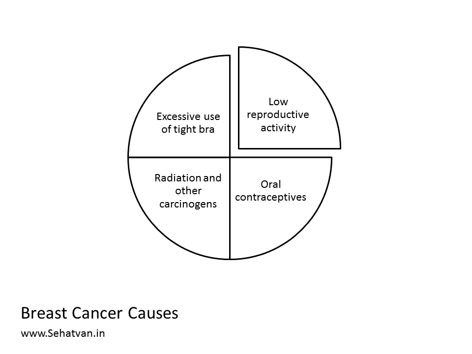
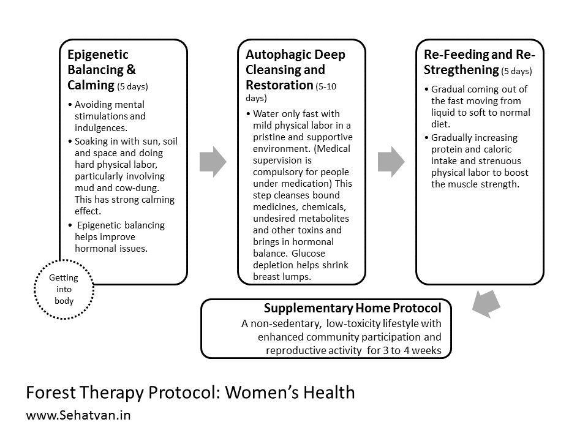

Take health, drop diseases
नमस्ते !

प्रत्येक प्राणी में सेल्फ-रिपेयर की क्षमता होती है, गड़बड़ लाइफ़स्टाइल इसे कमजोर कर देती है। इससे हमारी सेहत-आयु कम हो जाती है। सेहत-आयु जिंदगी का रोग-मुक्त हिस्सा है। सेहतवन आश्रम को जिंदगी में मजबूती और जोश लाने के लिए तैयार किया गया है।
Forest Therapy Module:
PCOD & Women’s Health
Recommended Duration:
A) At Sehatvan (Forest Protocol):
10 to 20 days
+
B) Home Protocol:
3 to 4 weeks (1 or 2 followup visits/calls)
Fee Contribution:
Indian Participants:
Rs 20,000
International Participants:
USD 350
Refund Policy:
Cancellation (only upto first 2 days of participation)
Rs. 5000/person is deducted and the balance is refunded.
Change of date:
subject to availability and updated fees.
Cancellation (only upto first 2 days of participation)
Rs. 5000/person is deducted and the balance is refunded.
Change of date:
subject to availability and updated fees.
Know More
What are Women's Health issues?
Therapeutic Protocol
On average, women live 10 years more than men, and also, they suffer more. They suffer more because they are the custodian of life’s biggest process, the reproduction, where men’s role is only minor. They have more complex physiology and hormonal system. Also they are the victims of social dictum. Most women’s health issues are due to mismatch in the biological aspects and social aspects. Let’s first look at what are the major issues females suffer additionally compared to the male counterpart. For the expediency’s sake we can group these issues in 3 groups: 1) Not much related with the reproduction, like Osteoporosis, Depression and Urinary Tract Infection, 2) Directly linked to reproduction apparatus, like Menstrual, Uterine and Hormonal Issues e.g. PCOD which is affecting to a very large young population, and 3) Breast Cancer.
 First, the non-reproductive issues, Osteoporosis, Depression and Urinary Tract Infection. A major factor of these diseases is a social stigma that women should always be clad, from tip-to-toes, in things like burkha or ghoonghat. Most societies consider it indecent if women walk on the street in small clothes. Along with this, there is also, particularly in India, a deep yearning to look fair. These two factors have cut-off most women from sun exposure. The result is that over 80% of them are Vitamin D deficient. And Vitamin D deficiency, actually the sun deficiency (because Vitamin D available in sachet is not the replacement), is the basic cause of Osteoporosis and Depression. Urinary tract infection in some women could be linked to Diabetes. But in most, it is due to poor sanitization. Women’s groin area, and also of men, should not only have good ventilation, but it should also receive sunshine as well, as this is the place which has fluid discharges. UTI, if not diabetic, is because of this lack of ventilation and sun exposure. Because of its functionality, whereas this area needs extra ventilation, the human stupidity is this that we put this under extra covers. No other species is as foolish.
 Now coming to the diseases directly linked to reproductive apparatus i.e. Menstrual, Uterine and Hormonal Issues. These issues are much more complex and need some deeper digging. The two most important activities of life are nourishment and reproduction. It is what most species in nature do. They are mostly busy in food related activities or in reproduction, and in between take rest and roam around. Humans got involved in many many things and to create room for those things many taboos have been created.
Let’s try understanding the reproductive (and also maternal) apparatus – ovary, uterus, vagina, breasts, a symphony of hormones oozing from as high as the brain itself, and the major events – menstruation, mating, fertilization, conceiving, delivery and breastfeeding. With secondary growth girls start menstruating somewhere around 12-13 year of age. That is the sign that they are readying for the reproduction. Once reproductive apparatus is ready, ovum is released from the ovary to wait for fertilization in the uterus. If fertilization occurs zygote forms and embryo starts growing. And after around 9 months a baby is delivered through the birth canal. If no fertilization takes place in a couple of weeks the ovum is thrown out of the body along with uterus lining in the form of bloody menstrual discharge. And thereafter, the process keeps repeating for many years i.e. up to the age of 40 to 65, and then it is stopped, with the arrival of menopause.
On a side note, there is a lot of news related to menstruation these days. Film stars are making films on it. Industry and social voices related to sanitary pads are getting louder. There has never been so much noise about the menstruation. For most of the time, it remained women’s secret act, secret suffering. Not any more, women can now suffer publicly. Baby diapers were already polluting the planet. With the advent cheap non-disposable sanitary pads, a large segment of women have joined them on this pollution voyage.
The pain increases with other physical complaints such as mental or physical issues. These affect the strength and length of the menstrual process. The monthly period is now seen as a cleansing: the body excretes blood and new blood cells are formed. In contrast to the past, women are more open and free about this process. The newly created openness to the topic has created a second movement that affects baby diapers: environmentally friendly alternatives in the form of washable sanitary towels, cups instead of tampons and a further developed form of underwear are available today.
Why in the past there wasn’t so much fuss about menstruation? And about the irregularity of it? And about PCOD? It’s not that women earlier were ignorant or lacked in awareness. Menstruation is actually not designed by nature for being so much. Women body isn’t a foolish design that it would shed so much blood every month. Does any other species do it so much? Think of cows, buffalos, cats? No, menstruation isn’t a regular act, it’s an abortion, a wastage, flushing, excretion and suffering, not something to be had every month. No lady enjoys having menstruation every month. Those are the difficult days. It’s because not-having brings other complication women aspire to have periods regularly.
Reproductive apparatus isn’t primarily designed to menstruate. It is designed to reproduce. Menstruation is a set-back and re-preparation. It’s like you invite someone over dinner, spend lot of time making the best food. But the person doesn’t turn up and you are left with no option but to throw away your meticulously prepared food. Such throwing away is a disappointment. But assume what – the person doesn’t turn up continuously for 10 or 20 or 100 times! And you keep doing the same thing every time – meticulously making it and painfully throwing it!! Think about the biological frustration, isn’t this irritating? And we expect everything remaining smooth.
Fertility peaks in twenties and women are biologically designed to deliver around 8 to 10 babies at an interval of around 3 years each. The cycle goes like this: mate and get pregnant, carry the pregnancy for 9 months with 0 menstruations, deliver the neonate and keep breastfeeding (no menstruation for another 4-12 months), then again have sex and go on. So there are periods of mating, menstruation, reproduction and breast feeding. In a nutshell women body is biologically designed to have only 40 to 50 menstruation periods in lifetime. Whereas, due to humans avoiding the child birth women end-up having 400 to 500 menstruation periods in lifetime. This huge 10 fold rise isn’t a matter of joke, biology has its limitation. And this change has happened in the last two generations. For millions of years, no contraceptives were available. Women were mostly pregnant or breastfeeding if not menopaused. Biology takes several hundred years to make a tiny evolutionary step.

However, we don’t mean correcting this problem by having more pregnancies. Childbirth in itself is a health hazard and this planet can no more support any rise in the human population. The solution has to be found out in some other way. By diverting this energy to some other activity, may be in doing strenuous physical labor. Substituting one labor (pain) by another, the one more tolerable, sustainable and overall nourishing. If this apparatus cannot be used well then the remaining body should be kept in high fitness.
About the Breast Cancer, the breasts are primarily meant for breastfeeding. Low reproductive lifestyle especially delayed first pregnancy; use of oral contraceptives and excessive use of tight bra are the main reason of breast cancer apart from other carcinogenic factors like radiations (including the ones emitted by cell phones) and chemicals like mosquito repellants. Perhaps, the use of bra as a cancer-causing practice is controversial, but it is well established that not wearing it is certainly healthier. 
 First, the non-reproductive issues, Osteoporosis, Depression and Urinary Tract Infection. A major factor of these diseases is a social stigma that women should always be clad, from tip-to-toes, in things like burkha or ghoonghat. Most societies consider it indecent if women walk on the street in small clothes. Along with this, there is also, particularly in India, a deep yearning to look fair. These two factors have cut-off most women from sun exposure. The result is that over 80% of them are Vitamin D deficient. And Vitamin D deficiency, actually the sun deficiency (because Vitamin D available in sachet is not the replacement), is the basic cause of Osteoporosis and Depression. Urinary tract infection in some women could be linked to Diabetes. But in most, it is due to poor sanitization. Women’s groin area, and also of men, should not only have good ventilation, but it should also receive sunshine as well, as this is the place which has fluid discharges. UTI, if not diabetic, is because of this lack of ventilation and sun exposure. Because of its functionality, whereas this area needs extra ventilation, the human stupidity is this that we put this under extra covers. No other species is as foolish.
 Now coming to the diseases directly linked to reproductive apparatus i.e. Menstrual, Uterine and Hormonal Issues. These issues are much more complex and need some deeper digging. The two most important activities of life are nourishment and reproduction. It is what most species in nature do. They are mostly busy in food related activities or in reproduction, and in between take rest and roam around. Humans got involved in many many things and to create room for those things many taboos have been created.
Let’s try understanding the reproductive (and also maternal) apparatus – ovary, uterus, vagina, breasts, a symphony of hormones oozing from as high as the brain itself, and the major events – menstruation, mating, fertilization, conceiving, delivery and breastfeeding. With secondary growth girls start menstruating somewhere around 12-13 year of age. That is the sign that they are readying for the reproduction. Once reproductive apparatus is ready, ovum is released from the ovary to wait for fertilization in the uterus. If fertilization occurs zygote forms and embryo starts growing. And after around 9 months a baby is delivered through the birth canal. If no fertilization takes place in a couple of weeks the ovum is thrown out of the body along with uterus lining in the form of bloody menstrual discharge. And thereafter, the process keeps repeating for many years i.e. up to the age of 40 to 65, and then it is stopped, with the arrival of menopause.
On a side note, there is a lot of news related to menstruation these days. Film stars are making films on it. Industry and social voices related to sanitary pads are getting louder. There has never been so much noise about the menstruation. For most of the time, it remained women’s secret act, secret suffering. Not any more, women can now suffer publicly. Baby diapers were already polluting the planet. With the advent cheap non-disposable sanitary pads, a large segment of women have joined them on this pollution voyage.
The pain increases with other physical complaints such as mental or physical issues. These affect the strength and length of the menstrual process. The monthly period is now seen as a cleansing: the body excretes blood and new blood cells are formed. In contrast to the past, women are more open and free about this process. The newly created openness to the topic has created a second movement that affects baby diapers: environmentally friendly alternatives in the form of washable sanitary towels, cups instead of tampons and a further developed form of underwear are available today.
Why in the past there wasn’t so much fuss about menstruation? And about the irregularity of it? And about PCOD? It’s not that women earlier were ignorant or lacked in awareness. Menstruation is actually not designed by nature for being so much. Women body isn’t a foolish design that it would shed so much blood every month. Does any other species do it so much? Think of cows, buffalos, cats? No, menstruation isn’t a regular act, it’s an abortion, a wastage, flushing, excretion and suffering, not something to be had every month. No lady enjoys having menstruation every month. Those are the difficult days. It’s because not-having brings other complication women aspire to have periods regularly.
Reproductive apparatus isn’t primarily designed to menstruate. It is designed to reproduce. Menstruation is a set-back and re-preparation. It’s like you invite someone over dinner, spend lot of time making the best food. But the person doesn’t turn up and you are left with no option but to throw away your meticulously prepared food. Such throwing away is a disappointment. But assume what – the person doesn’t turn up continuously for 10 or 20 or 100 times! And you keep doing the same thing every time – meticulously making it and painfully throwing it!! Think about the biological frustration, isn’t this irritating? And we expect everything remaining smooth.
Fertility peaks in twenties and women are biologically designed to deliver around 8 to 10 babies at an interval of around 3 years each. The cycle goes like this: mate and get pregnant, carry the pregnancy for 9 months with 0 menstruations, deliver the neonate and keep breastfeeding (no menstruation for another 4-12 months), then again have sex and go on. So there are periods of mating, menstruation, reproduction and breast feeding. In a nutshell women body is biologically designed to have only 40 to 50 menstruation periods in lifetime. Whereas, due to humans avoiding the child birth women end-up having 400 to 500 menstruation periods in lifetime. This huge 10 fold rise isn’t a matter of joke, biology has its limitation. And this change has happened in the last two generations. For millions of years, no contraceptives were available. Women were mostly pregnant or breastfeeding if not menopaused. Biology takes several hundred years to make a tiny evolutionary step.

However, we don’t mean correcting this problem by having more pregnancies. Childbirth in itself is a health hazard and this planet can no more support any rise in the human population. The solution has to be found out in some other way. By diverting this energy to some other activity, may be in doing strenuous physical labor. Substituting one labor (pain) by another, the one more tolerable, sustainable and overall nourishing. If this apparatus cannot be used well then the remaining body should be kept in high fitness.
About the Breast Cancer, the breasts are primarily meant for breastfeeding. Low reproductive lifestyle especially delayed first pregnancy; use of oral contraceptives and excessive use of tight bra are the main reason of breast cancer apart from other carcinogenic factors like radiations (including the ones emitted by cell phones) and chemicals like mosquito repellants. Perhaps, the use of bra as a cancer-causing practice is controversial, but it is well established that not wearing it is certainly healthier. 
Forest therapy protocol for women’s health has 3 in-forest and 1 post-forest stages. It begins with
epigenetic balancing and calming and then moves to autophagic deep cleansing and restoration, followed
by re-feeding and re-strengthening.
Forest Protocol
Sehatvan protocol is comprised of 3 steps:

Supplementary Home Protocol
- Epigenetic Balancing and Calming (5 days): Forest stay helps fine-tunes gene switching and once gene-switching is fine-tuned most hormonal balancing is restored. During this stage we also recommend sun bathing, mud and cow-dung contact as these have super calming effect and improve emotional state, which further helps restoration of hormonal imbalance. Cow dung and mud also have vitamin B12 producing bacteria and keeping sanitization low helps overall strengthen microbiota. Sun is also very effective against osteoporosis. In this phase mental indulgences and stimulations should be avoided, including the use of cell phone, reading a book, listening music etc. One should get indulged in a lot of physical activity.
- Autophagic Deep Cleansing and Restoration (5-10 days): Water only fast for 5 or more days dramatically cleanses body by detoxing. In this phase virtually all the build-up of the bound medicines, bound chemicals, undesired metabolites and toxins is cleared away; thereby, body becoming pure and clean. Longer fasts bring-in much deeper cleansing and have restorative and rejuvenative potential further bringing the hormones in balance. Autophagy induces biological age reversal; and hence, aging related issues are also reversed. Since cancer cells thrive on glucose, glucose depletion helps shrink breast cancer in early stages. However, during this phase people carrying large toxicities may feel varied uncomfortable detox symptoms, and hence, this step should be taken-up under a supportive and pristine environment only. Medical supervision is required for people on medication.
- Re-feeding and Re-strengthening (5 days): When autophagic fast extends a week or more digestive system virtually shuts down, this phase is designed to gradually restart the digestive system. Also, physical activities are gradually increased to make up for the muscle-loss, if any.
Subsequent to the forest components participants are given a tailor made home protocol, which primarily
aims at living a non-sedentary, low-sanitization, low-toxicity lifestyle for 3 to 4 weeks. Participants
are also encouraged to build communities around them to have better emotional health and also, where
ever feasible or justified, to become reproductively active.
Daily/ Hourly Protocols
Protocol for the first 10 days is standard for everyone and is available at www.sehatvan.in in the form
of a booklet. Subsequent protocols are tailor made to each individual’s needs and situations.
Please send an email to sehatvan@gmail.com to receive.
PRECAUTION
Please send an email to sehatvan@gmail.com to receive.
The protocol should be undertaken only under medical supervision as people under medication require
continuous dosage adjustments. Also, those carrying toxicities may experience detox symptoms like
vomiting, diarrhea, skin rashes, body ache, fever etc during autophagy phase. Since Sehatvan is not a
medical institution, we recommend people coming here keeping in touch with their doctor.
अन्य प्रश्न
फॉरेस्ट थेरेपी क्या है?

दृग डिस्कवरी वैज्ञानिक के रूप में दो दशकों के दौरान भारत, यूरोप, अमेरिका की विभिन्न फार्मा कंपनियों के लिए नई दवाइयों को विकसित करने का काम किया। 2011 में आपको रॉयल स्वीडिश अकादेमी ऑफ साइंसेस ने नोबेल म्यूज़ियम, स्टॉकहोम में दक्षिण पूर्वी एशिया का प्रतिनिधित्व करने के लिए आमंत्रित किया। आपने 2010 एक रिसर्च पब्लिशिंग कंपनी – ‘Inventi’ और 2016 में एक सेल्फ हीलिंग स्पेस ‘सेहतवन’ का सह-संस्थापन किया।
यह तनाव-मुक्तता, विष-मुक्तता और पुनर्नवन पर आधारित एक प्रणाली है जिससे शरीर का सेल्फ-रिपेयर
सिस्टम रीबूट हो जाता है और बीमारियाँ तिरोहित होने लगती हैं।

इसे कौन कर सकता है?
इसे स्वस्थ और बीमार दोनों तरह के लोग कर सकते हैं। इससे स्वस्थ लोगों का हैल्थ-स्पान बढ़ता है
और
बीमार लोग स्वस्थ होने लगते हैं।
इसे कौन नहीं कर सकता है?
वे लोग जो जिन्हें सतत मेडिकल निगरानी की जरूरत है, जो चल-फिर नहीं सकते हैं, और वे जिन्हें
अपने
काम खुद करना पसंद नहीं है।
किन बीमारियों में लोगों ने लाभ लिया है?
डाईबीटीज़, हार्ट-इशू, बीपी, थाईराइड, ओबेसिटी(वेट लॉस), तनाव,
कैंसर (अर्ली स्टेज एवं प्रेवेंशन), PCOD, एसिडिटि, अर्थराइटिस, कमर दर्द और अन्य लाइफस्टाइल
एवं ऑटो-इम्यून
बीमारियाँ।
इसमें करते क्या हैं? कितना समय लगता है?
यह स्वास्थ्य विज्ञानी डा. विपिन गुप्ता द्वारा आविष्कारित CNA (कम्यूनिटी-लिविंग, नेचर,
ऑटोफैजी) प्रणाली
है जिसे सेहतवन में रहकर किया जाता है, यह अलग-अलग लोगों के लिए अलग-अलग हो सकती है।
हाफ-कोर्स की अवधि: 7 दिन की होती है और फुल-कोर्स में 2 से 4 सप्ताह लगते हैं।
डॉ विपिन गुप्ता के बारे में:
दृग डिस्कवरी वैज्ञानिक के रूप में दो दशकों के दौरान भारत, यूरोप, अमेरिका की विभिन्न फार्मा कंपनियों के लिए नई दवाइयों को विकसित करने का काम किया। 2011 में आपको रॉयल स्वीडिश अकादेमी ऑफ साइंसेस ने नोबेल म्यूज़ियम, स्टॉकहोम में दक्षिण पूर्वी एशिया का प्रतिनिधित्व करने के लिए आमंत्रित किया। आपने 2010 एक रिसर्च पब्लिशिंग कंपनी – ‘Inventi’ और 2016 में एक सेल्फ हीलिंग स्पेस ‘सेहतवन’ का सह-संस्थापन किया।
‘सहज सेहत’ श्रंखला इस सोच को प्रस्तुत करती है कि कैसे शरीर की ऑटो-रिपेयर क्षमताओं से लाइफ़स्टाइल बीमारियों को हमेशा के लिए खत्म किया जा सके।